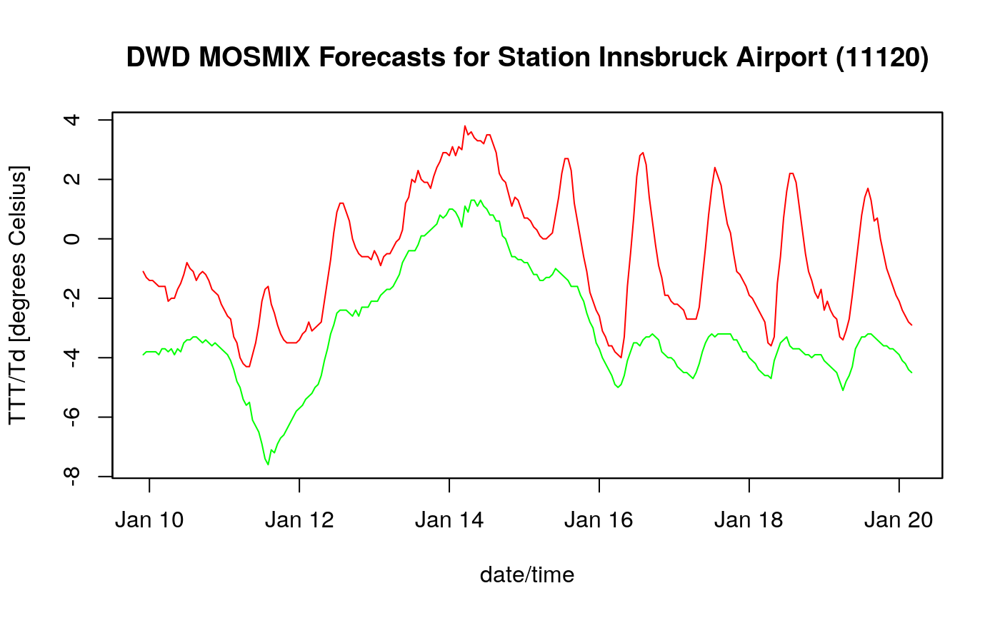

get_forecasts.RdThis is the reason this package exists. Extracts the DWD MOSMIX forecasts for a specific station/location.
get_forecasts(station, doc, datetime, meta, parameter = NULL, as.zoo = TRUE) # S3 method for dwdforecast print(x, ...)
| station |
|
|---|---|
| doc | an |
| datetime | vector of time stamps for which the forecasts
are valid as returned by |
| meta | object of class |
| parameter | can be |
| as.zoo | logical, default |
| x | an object of class |
| ... | forwarded to S3 methods. Unused for now. |
Returns a data.frame or zoo object
(depending on input as.zoo) with the DWD MOSMIX forecasts.
Extracts the forecasted values for a given location.
If as.zoo = FALSE a data.frame will be returned
containing the date/time for which the forecasts are valid
in the first column (datetime).
If as.zoo = TRUE a zoo object is returned. In this
case the datetime column (see above) will be removed.
The parameter input argument allows to subset the data.
If parameter = NULL all parameters will be returned
which provide at least one valid value. Columns containing
missing values only will be removed automatically.
parameter can be used to subset the data. Only the user
specified columns will be returned. Note that this could result
in an empty object if no values are available given the
parmaeter specification!
get_station_information, get_meta_info, get_datetime, parameter_description.
# Latest L-type DWD MOSMIX forecast file for Innsbruck Airport url <- "https://opendata.dwd.de/weather/local_forecasts/mos/MOSMIX_L/single_stations/11120/kml/MOSMIX_L_LATEST_11120.kmz" # Download and extract file kmz <- tempfile("mosmix_demo_", fileext = ".kmz") check <- download.file(url, kmz) if ( inherits(check, "try-error") ) stop("Problems downloading the file!") kml <- unzip(kmz) # Parsing the unzipped kml file (XML format) # And extract required datetime and meta information. doc <- XML::xmlParse(kml) datetime <- get_datetime(doc) meta <- get_meta_info(doc) stations <- get_station_information(doc) # Extracting forecasts now # - parameter = NULL: extracts all parameters # - as.zoo = TRUE: returns a time series object. fcst1 <- get_forecasts("11120", doc, datetime, meta)#> Processing station 11120print(fcst1)#> DWD MOS Forecast Object #> #> Issuer: Deutscher Wetterdienst #> ProductID: MOSMIX #> GeneratingProcess: DWD MOSMIX hourly, Version 1.0 #> IssueTime: 2019-01-09 15:00:00 UTC #> ReferencedModel(s) #> - 2019-01-09 12:00:00 UTC, ICON #> - 2019-01-09 00:00:00 UTC, ECMWF/IFS #> #> Object is of class zoo: TRUE #> Station identifier: 11120 #> Station description: INNSBRUCK FL. #> Station location: 11.35,47.27,581.0 (lon/lat/alt) #> First forecast for: 2019-01-09 16:00:00 #> Last forecast for: 2019-01-19 22:00:00 #> Number forecasts (time): 247 #> Number of parameters: 98#> [1] "dwdforecast" "zoo"#> PPPP E_PPP TX TTT E_TTT #> 2019-01-09 16:00:00 101240 30 NA 272.65 0.7 #> 2019-01-09 17:00:00 101310 50 NA 272.85 0.8 #> 2019-01-09 18:00:00 101350 60 274.05 272.95 0.9 #> 2019-01-09 19:00:00 101400 60 NA 272.95 1.0 #> 2019-01-09 20:00:00 101450 60 NA 272.95 0.9 #> 2019-01-09 21:00:00 101540 60 NA 272.75 0.8# Extracting forecasts now # - parameter = NULL: extracts all parameters # - as.zoo = FALSE: returns a data.frame fcst2 <- get_forecasts("11120", doc, datetime, meta, as.zoo = FALSE)#> Processing station 11120print(fcst2)#> DWD MOS Forecast Object #> #> Issuer: Deutscher Wetterdienst #> ProductID: MOSMIX #> GeneratingProcess: DWD MOSMIX hourly, Version 1.0 #> IssueTime: 2019-01-09 15:00:00 UTC #> ReferencedModel(s) #> - 2019-01-09 12:00:00 UTC, ICON #> - 2019-01-09 00:00:00 UTC, ECMWF/IFS #> #> Object is of class zoo: FALSE #> Station identifier: 11120 #> Station description: INNSBRUCK FL. #> Station location: 11.35,47.27,581.0 (lon/lat/alt) #> First forecast for: 2019-01-09 16:00:00 #> Last forecast for: 2019-01-19 22:00:00 #> Number forecasts (time): 247 #> Number of parameters: 99#> [1] "dwdforecast" "data.frame"#> DWD MOS Forecast Object #> #> NULL #> NULL #> #> Object is of class zoo: FALSE #> Station identifier: datetime PPPP E_PPP TX TTT #> Station description: #> Station location: (lon/lat/alt) #> First forecast for: 2019-01-09 16:00:00 #> Last forecast for: 2019-01-09 21:00:00 #> Number forecasts (time): 6 #> Number of parameters: 5# Extracting forecasts now # - parameter is set: return 2m temperature and 2m dewpoint # temperature only (see parameter_description method) # - as.zoo = TRUE: returns a time series object. fcst3 <- get_forecasts("11120", doc, datetime, meta, parameter = c("TTT", "Td"))#> Processing station 11120print(fcst3)#> DWD MOS Forecast Object #> #> Issuer: Deutscher Wetterdienst #> ProductID: MOSMIX #> GeneratingProcess: DWD MOSMIX hourly, Version 1.0 #> IssueTime: 2019-01-09 15:00:00 UTC #> ReferencedModel(s) #> - 2019-01-09 12:00:00 UTC, ICON #> - 2019-01-09 00:00:00 UTC, ECMWF/IFS #> #> Object is of class zoo: TRUE #> Station identifier: 11120 #> Station description: INNSBRUCK FL. #> Station location: 11.35,47.27,581.0 (lon/lat/alt) #> First forecast for: 2019-01-09 16:00:00 #> Last forecast for: 2019-01-19 22:00:00 #> Number forecasts (time): 247 #> Number of parameters: 2#> [1] "dwdforecast" "zoo"#> TTT Td #> 2019-01-09 16:00:00 272.65 270.05 #> 2019-01-09 17:00:00 272.85 270.35 #> 2019-01-09 18:00:00 272.95 270.55 #> 2019-01-09 19:00:00 272.95 270.55 #> 2019-01-09 20:00:00 272.95 270.75 #> 2019-01-09 21:00:00 272.75 270.95plot(fcst3 - 273.15, screen = 1, col = c("red", "green"), xlab = "date/time", ylab = "TTT/Td [degrees Celsius]", main = "DWD MOSMIX Forecasts for Station Innsbruck Airport (11120)")#> [1] TRUE TRUE